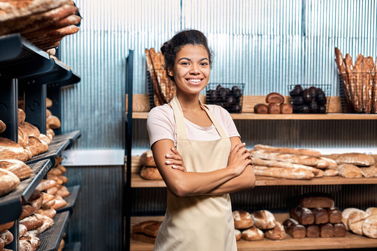
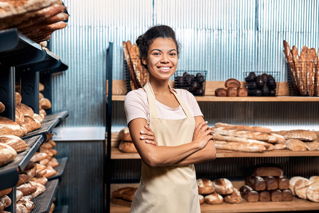

The best cookies and muffins in town
You can find us on the center of Barcelona. It is perfect to grab delicious pastries and continue walking. Also we offer a very cozy and comfortable place to enjoy our products. There are many means of transport near and if you can't get to us, we can get to you! We deliver any product in less than an hour.

Puff pastry with many season fruits and a very soft cream.
Layers of vanilla sponge, apricot jam, chantilly cream and topped with caramelized sugar.

The classic Sacher Torte is made with chocolate cake layers, apricot preserves and a shiny chocolate-glaze finish. It’s a lovely cake fit for any occasion.

Typical cake of Baden cuisine and one of the most characteristic sweets of German gastronomy. It is made up of several layers of chocolate cake soaked in kirsch and interspersed with cream and cherries.

layered no-bake dessert consisting of ladyfingers soaked with coffee and rum, then layered with a whipped mixture of sugar, eggs and the creamy, sweet mascarpone cheese sprinkled with cocoa.
Many flavours and designs availables. Excelent idea for an original birthday or many celebrations cake.
 
